China Overtime Payroll Compliance in 2026: Daily Attendance-to-Payroll Controls for Foreign Employers
Key takeaways
- For foreign employers in China, overtime risk is usually generated before payroll calculation—inside attendance capture, manager approvals, and exception routing.
- The practical control objective is a single attendance-to-payroll workflow with hard gates at D-7 and D-3, not fragmented manual handoffs.
- Most disputes are linked to evidence quality and communication mismatch, even when payroll math is technically correct.
- A role-owned SOP (HR, Payroll, Manager, Vendor/EOR) reduces rework, missed deadlines, and defensibility gaps.
- Local practice can vary by city and case pattern, so uncertain treatment points should be flagged and confirmed before release.
Why this topic has immediate decision relevance for foreign employers
Overtime is one of the most frequent payroll-risk triggers for foreign employers in China because it combines legal principles, daily attendance data, manager behavior, and month-end payroll conversion. Many global teams assume overtime compliance is mainly about applying rates correctly. In practice, rates are the easy part. The harder part is ensuring the right hours are captured, categorized, approved, and converted into payroll in a way that can be defended if challenged.
When this workflow is weak, the same errors repeat every month: late timesheet approvals, rest-day work coded as ordinary hours, public holiday treatment inconsistencies, and disputed eligibility decisions that arrive after payroll lock. These issues create avoidable employee disputes and off-cycle correction work. For EOR buyers and multinational operators, the decision is straightforward: treat overtime as a control-tower process, not a single payroll formula task.
The control-tower model: from raw attendance to defensible payroll output
An operations-first model has four linked layers:
- Data capture layer — attendance system integrity, schedule mapping, and location calendar alignment.
- Decision layer — manager approvals, HR policy checks, and exception classification.
- Payroll conversion layer — component mapping, run-lock rules, and reconciliation checks.
- Evidence layer — archived approvals, logic notes, and employee communication records.
Foreign employers often have each layer in isolation, but not as one governed workflow. That is where quality breaks. The goal is to make each overtime item traceable from source attendance event to final payroll line with owner, timestamp, and approval trail.
Regulatory baseline (concise): confirmed principles vs implementation uncertainty
The Labor Law provides the core framework for working hours and overtime compensation principles. The Labor Contract Law supports broader labor-rights and dispute-risk framework that affects how compensation treatment and evidence are evaluated in practice. The Social Insurance Law underpins payroll governance expectations in statutory administration and reconciliation context. Practitioner analysis for multinationals consistently highlights that process discipline and documentation quality are decisive in China employment operations.
What is clear for foreign employers: overtime handling must be consistent, documented, and aligned across attendance, approvals, and payroll treatment. What remains uncertain in day-to-day operations: city-level interpretation on close fact patterns and evidence sufficiency thresholds in disputes. The practical response is not guesswork; it is early risk-tagging and local confirmation before payroll cut-off.
Failure map: where overtime compliance breaks in a normal payroll month
- D-7: attendance corrections still open with no owner deadline.
- D-5: manager approvals are partial or inconsistent across teams.
- D-3: disputed eligibility cases are unresolved but still queued for in-cycle processing.
- D-0 (payroll day): conversion logic differs from communication sent to employees.
- D+2: reconciliation identifies misclassified items requiring off-cycle correction.
This failure pattern is common in fast-scaling teams. Fixing it requires timeline governance, not more ad hoc spreadsheet checks.
Scenario 1: Late timesheet approvals create month-end rework
A multinational team in China closes attendance at D-5, but several business units submit approvals after D-2 due to manager travel and unclear backup approver rules. Payroll receives mixed files and manually patches entries in the final hours before lock. The run completes, but several employees challenge overtime classification and payment timing. HR then opens manual correction cases in the next cycle.
Operational lesson: define a D-3 “approval complete” gate and auto-route late entries to controlled exception workflow rather than forced in-cycle edits.
Scenario 2: Overtime eligibility disputes surface after employee communication
An employee receives a payroll preview showing no rest-day premium component because the manager classified the shift as schedule-adjusted work. HR communication, however, described it as rest-day overtime pending approval. The mismatch triggers a dispute, and payroll must reconstruct the decision trail.
Operational lesson: use one source-of-truth overtime case note shared by HR and payroll, with locked reason codes and change logs.
Daily SOP: role-by-role overtime payroll execution
Stage A — Data freeze preparation (D-10 to D-7)
HR owner
- Publish cutoff calendar and approval deadlines for all business units.
- Validate overtime policy references and reason-code dictionary.
- Confirm manager backup approvers for absences.
Manager owner
- Review pending attendance anomalies by team.
- Confirm overtime eligibility status and supporting notes.
- Submit correction requests before D-7 cutoff.
Payroll owner
- Generate pre-close exception list from attendance system.
- Pre-map overtime components and check prior-month carryovers.
- Flag high-risk unresolved items for HR review.
Vendor/EOR owner (if applicable)
- Confirm local calendar and workday mapping parameters.
- Validate data interface timing and required file format controls.
Stage B — Approval and classification control (D-7 to D-3)
HR + Manager control
- Resolve open attendance anomalies.
- Confirm eligibility classification for each disputed item.
- Escalate unresolved items to exception route.
Payroll control
- Build versioned overtime conversion file.
- Separate approved items from pending/contested items.
- Run pre-lock variance checks against prior cycle norms.
SLA targets
- D-7: open anomaly list frozen and assigned
- D-5: approvals >=95% complete
- D-3: all in-cycle overtime items fully approved
Stage C — Payroll-day execution (D-0)
Payroll owner
- Execute run using approved conversion file version only.
- Reconcile overtime components by department and employee segment.
- Validate exceptions are excluded or processed via approved route.
- Archive run snapshot, approvals, and reconciliation output.
HR owner
- Issue aligned payroll communication notes for material exceptions.
- Capture employee queries with reason-code reference.
Stage D — Post-run quality closure (D+1 to D+5)
HR + Payroll + Vendor/EOR
- Review correction requests and classify root causes.
- Confirm statutory and internal reconciliation completion.
- Log preventive actions for next cycle.
- Close month only after evidence archive completeness check.
Required document checklist
| Document | Owner | Deadline | Purpose |
|---|---|---|---|
| Monthly cutoff and approval calendar | HR | D-10 | Timeline and ownership clarity |
| Attendance anomaly register | Payroll | D-7 | Early risk visibility |
| Manager overtime approval logs | Manager | D-5 | Decision evidence |
| Overtime classification sheet | HR | D-5 | Consistent treatment mapping |
| Versioned conversion file | Payroll | D-3 | Auditable run input |
| Exception approvals | HR + Payroll lead | D-3 | Controlled handling of unresolved items |
| Payroll run reconciliation report | Payroll | D+1 | Output quality control |
| Employee communication and query log | HR | D+2 | Communication consistency and traceability |
Exception handling playbook
Exception A: late timesheet after D-3
- Rule: no uncontrolled in-cycle manual insert.
- Action: move to approved exception queue with owner and target payout cycle.
- Control: escalation to HR and payroll leads same day.
Exception B: disputed overtime eligibility
- Rule: contested items require documented classification decision.
- Action: freeze contested component and issue interim communication with next review timeline.
- Control: single case owner and centralized response log.
Exception C: public holiday or rest-day misclassification
- Rule: no assumption-based reclassification at payroll lock.
- Action: validate calendar mapping and policy reference, then process via approved correction path.
- Control: track as systemic parameter issue if repeated.
Exception D: cross-city team with inconsistent scheduling rules
- Rule: local calendar parameters must be explicit by location.
- Action: segment files by city and apply location-specific checks before conversion.
- Control: prevent merged-file processing without location tags.
System implementation notes (payroll + attendance + audit)
- Unified reason codes: maintain controlled dictionary for overtime classifications.
- Interface controls: checksum and timestamp validation when importing attendance data.
- Approval integrity: enforce in-system approvals with delegate hierarchy.
- Version management: lock conversion files with immutable version ID.
- Audit archive schema: attendance source, approvals, conversion file, run output, reconciliation, communications.
- Exception dashboard: track late approvals, disputed items, and correction cycle time.
- KPI layer: monitor approval timeliness, exception volume, off-cycle correction ratio, employee query recurrence.
Common mistakes and prevention
- Mistake: focusing only on payroll formula.
Prevention: govern full attendance-to-payroll chain with owner-level controls.
- Mistake: allowing late approvals into locked run.
Prevention: enforce D-3 hard gate and approved exception path.
- Mistake: communication and coding mismatch.
Prevention: one source-of-truth case note linked to reason code and payroll component.
- Mistake: blending multi-city calendars in one process stream.
Prevention: location tags and segmented validation before conversion.
- Mistake: no root-cause review after corrections.
Prevention: post-run exception retrospective with preventive action tracking.
What to do now: 10-step implementation checklist
- Publish monthly overtime control calendar with D-7 and D-3 gates.
- Assign named owners for HR, Payroll, Manager approvals, and Vendor/EOR interface.
- Standardize overtime reason-code dictionary.
- Build anomaly register from attendance system.
- Implement version-controlled conversion file workflow.
- Define exception queue and payout-cycle policy.
- Train managers on approval timeliness and evidence requirements.
- Add reconciliation report template for D+1 closure.
- Track KPI dashboard and share in monthly governance meeting.
- Review repeated exception patterns and adjust process design.
What to watch next
For foreign employers, overtime compliance quality in China will depend more on workflow rigor than on headline legal changes. Local handling of edge-case disputes and evidence sufficiency may continue to vary by city and facts, so teams should maintain local confirmation channels and keep parameter governance current. Organizations that maintain a consistent control cadence will generally outperform teams that rely on end-of-month firefighting.
FAQ
1) Is overtime risk mainly a payroll math issue?
No. Most risk originates earlier in attendance capture, approvals, and classification decisions.
2) What is the single most effective control?
A D-3 approval lock that prevents unresolved or disputed overtime items from entering in-cycle payroll.
3) Can one national overtime process work for all locations in China?
A unified framework can work, but location-specific calendar and implementation parameters should be built into controls.
4) Should disputed items always be paid in the same cycle?
Not necessarily. A controlled exception route with documented timeline is safer than uncontrolled in-cycle manual edits.
5) What records matter most if disputes occur?
Attendance source data, approval logs, classification notes, conversion file versions, payroll reconciliation, and employee communication logs.
6) How should EOR users structure responsibilities?
Define clearly who owns classification decisions, who approves payroll release, and who confirms local process parameters.
7) Does this replace legal advice?
No. This is operational guidance and should be paired with qualified local professional advice for case-specific decisions.
Disclaimer
This article is for informational purposes only and does not constitute legal, tax, or accounting advice. China employment and payroll implementation can vary by city and case facts. Employers should seek qualified local professional advice before making decisions.
Sources
- National People's Congress. Labor Law of the People's Republic of China. Official English text: http://www.npc.gov.cn/zgrdw/englishnpc/Law/2007-12/16/content_1381294.htm (accessed 2026-02-26).
- National People's Congress. Labor Contract Law of the People's Republic of China. Official English text: http://www.npc.gov.cn/zgrdw/englishnpc/Law/2007-12/13/content_1384064.htm (accessed 2026-02-26).
- National People's Congress. Social Insurance Law of the People's Republic of China. Official English text: http://www.npc.gov.cn/zgrdw/englishnpc/Law/2009-02/20/content_1471106.htm (accessed 2026-02-26).
- Littler. Key Recent Developments in China's Employment Law: A China-U.S. Comparative Perspective for Multinational Employers. 2025-09-16. https://www.littler.com/news-analysis/asap/key-recent-developments-chinas-employment-law-china-us-comparative-perspective.
China-Payroll.com supports foreign employers with compliance-first EOR and payroll operations, including attendance governance design, monthly control execution, and dispute-risk reduction workflows.
Need local employment support in China?
If you need a compliance-first partner for hiring, payroll, and risk controls in China, China-Payroll.com can help evaluate the right setup.
Image Prompt Pack
Create a 16:9 hero image for article title: 'China Overtime Payroll Compliance in 2026: Daily Attendance-to-Payroll Controls for Foreign Employers'. Scene: global operations team evaluating workforce model options for China market entry. Include motifs: decisi…